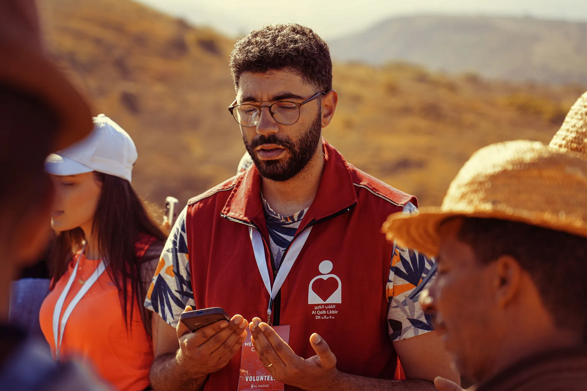

Youth and holiday activities
Safe, structured sessions during evenings, weekends and school holidays.
We are looking for funders, businesses, public bodies and community organisations that want to support practical, visible work.
Support can help us increase activity frequency, reach more residents and develop new programmes shaped around local needs.

These are the areas we would like to develop as resources and partnerships become available.
Safe, structured sessions during evenings, weekends and school holidays.
Accessible sessions that reduce isolation and strengthen local connections.
Practical workshops, mentoring and routes towards education or work.
Additional football sessions and other affordable physical activities.
More clean-ups, planting, recycling and neighbourhood improvement work.
Equipment, venues, safeguarding, training, coordination and transport.
Tell us what your organisation can offer and what outcomes matter to you.